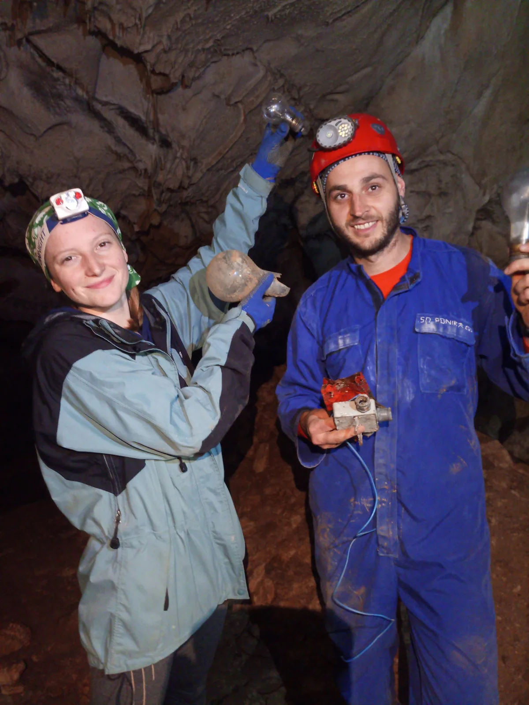

Izlet na Glogovo
Moja mater te po špilji traži, zna di radiš i di se krećeš, zna sva mista di ideš navečer. Ne moreš joj pobić'... :)

Sažela: Ana Vidić Fotografije: Ana Bakšić, Ana Vidić, Marko Rakovac Mini ekspedicija uputila se 26.10. prema Gračacu; Ana B, Mia, Srki, Fero, Andrijica, Ela, Španja, Jonathan, Mašina i ja na Glogovo, a Raki, Niko, Bobica i Matija u Kitu. Banjalučani Joviša, Dejo i Čoji su nas dočekali u hotelu s 5 zvjezdica pokraj Cerovačkih špilja u kojem smo spavali- ni na šta manje i ne pristajemo. U rano subotnje jutro organiziramo se u timove kako bi napravili i istražili što više objekata. Iako je velika kiša najavljivana za taj vikend, mi smo odmah zaključili da to nema iz čega padat i zaputili se svako po svom zadatku. Tim 1 je uz puno strpljenja i kvarova na autu pronašao Radoševića jamu pokraj sela Smokrići, zahvaljujući nadzorniku Parka prirode Velebit Josipu Frketiću. Tim 2 je za to vrijeme uspio posjetiti više objekata od kojih su istražili Jamu pod Trenzinom dubine 12m, posjetili Špiljicu uz cestu D1 duljine 40m, te ulaz u Mirzinu jamu u Gubavčevom polju. Svi zajedno smo isti dan posjetili predivnu Gornju Cerovačku špilju. Na kraju dana nam se pridružuje ekipa iz Kite i Marko Ličko koji je taj dan zajedno sa Andrijicom završio raspremanje Ponora Bunovac u NP Paklenica. Nakon napornog dana odmaramo u resortu, a plan za zadnji dan je posjetiti Donju Cerovačku pećinu. Tu nam se pridružuju Elida i Iva Vidić (mama i sestra od Pave i Ane Vidić) pa nam se broj zaokružuje na 20 istraživača.
Gošće Velebitašice bile su oduševljene špiljom, pogotovo kada su kročile u neturistički avanturistički dio. “Genijalno!” kaže mater i fala Velebitaši!
[gallery ids="2024,2025,2026,2027,2028,2029,2030,2031" type="rectangular"]